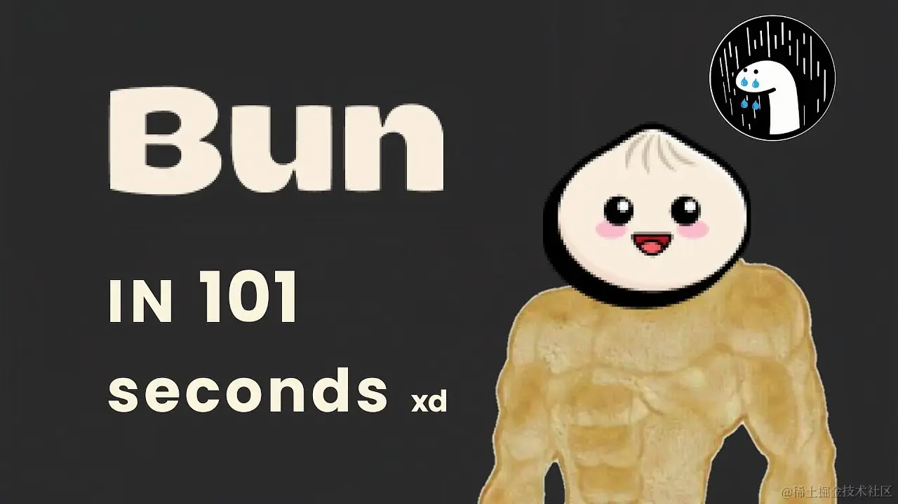
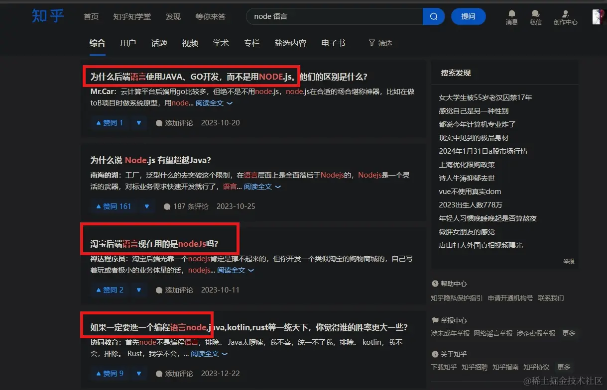
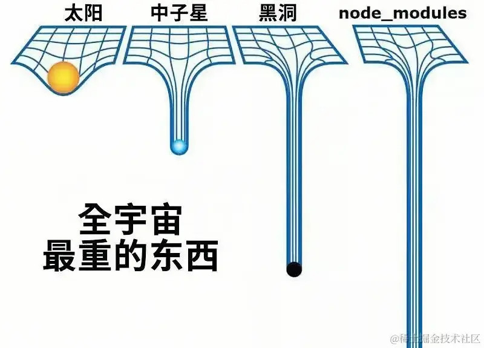
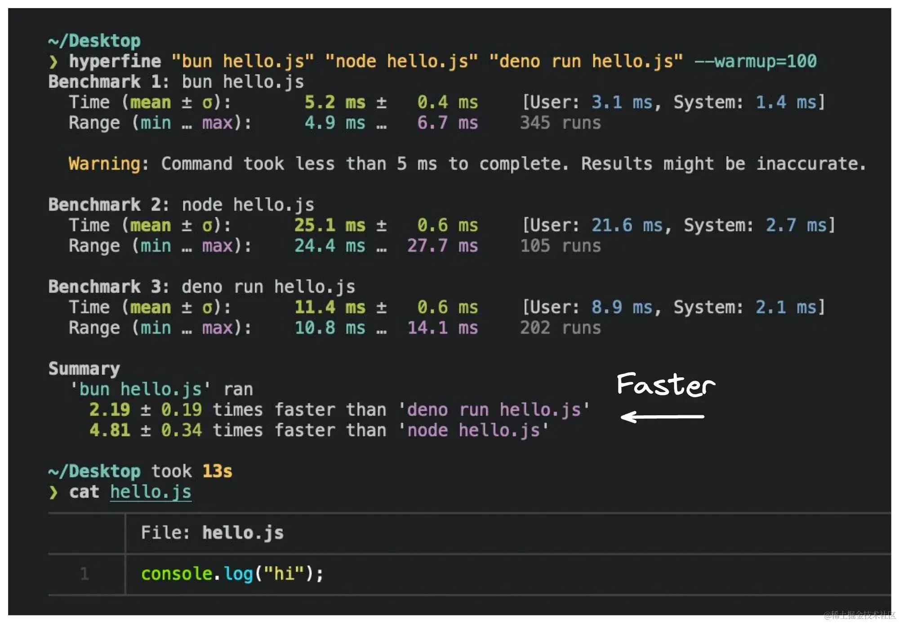
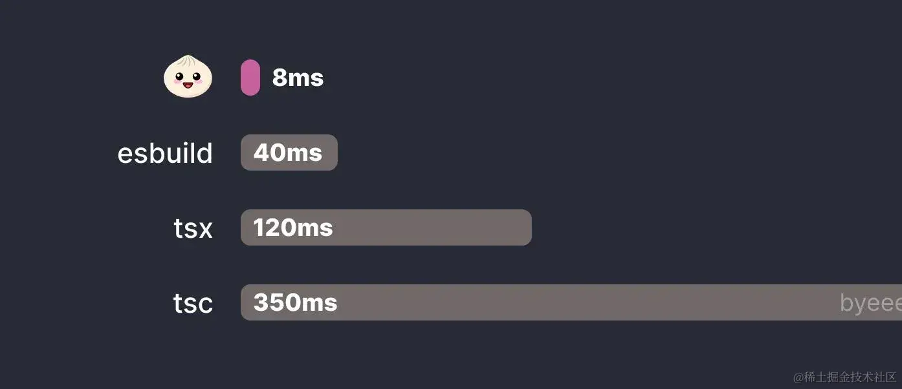
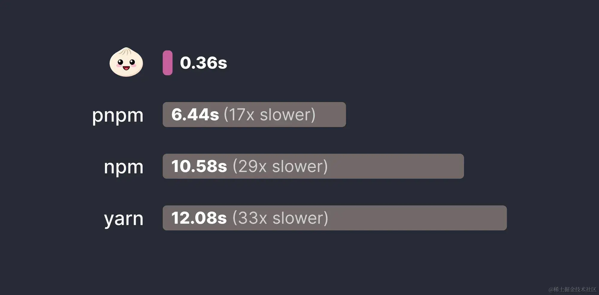

近年来，前端社区涌现了一大坨运行时，包括但不限于：
- 稳如老狗的 Node.js
- 不破不立的 Deno
- 大破大立的 Bun
去年，“Bun 之父”J.S. 官宣 Bun 1.0 新鲜出炉，今年 Bun 团队更是野心勃起，企图用 Bun 打败 Node。说是这样说，气势不能输，但私以为 Node 重度用户的“路径依赖”没那么容易克服，大多数用户（包括本人）大概率还是会在 Node 的舒适圈中“圈地自萌”。
话虽如此，还是有一大坨道友先质疑、再质疑：
- 为什么大家都拿 Bun 和人气爆棚的 Node 相提并论？
- Bun 只是昙花一现之过眼云烟，还是可能终结 Node 的长期垄断？
Bun 到底是什么鬼物？
Bun 直男翻译为“包子”，或者“小圆甜蛋糕”，我有一个大胆的想法：Bun 的含义大概是想成为像 Node 一样前端爱好者生活必需的“面包”，抑或是企图在运行时市场瓜分一块“蛋糕”。
说巧不巧，初露头角的 Bun 的头像就是一大坨名副其实的包子，而成名多年的 Node 的吉祥物还在路上。
根据 Bun 的官方公关，Bun 是一款可以和 JS/TS “梦幻联动”的 all-in-one toolkit（一体化工具人）。换而言之，Bun 是妥妥的“斜杠青年” —— Bun 是运行时/包管理器/打包器/测试运行器。Bun 主打的就是一条龙服务 —— Node 有的我都有，Node 原生没有的，不好意思我也有。
Bun 的产品定位
Node 于 2009 横空出世，这位“00 后”如今可谓人气爆棚，以至于某些道友指猫为狗 —— Node 是一门“编程语言”，这大约就是“人怕出名猫怕胖”。
虽然但是，像 React 和 Angular 等前端技术一样，随着代码屎山与日俱增，Node 的熵值也突破天际。
举个栗子，臭名昭著的“npm 依赖地狱”，爱因斯坦看完都要重新审视相对论了。
再举个栗子，Node 默认的包管理工具 npm 差强人意，所以 Node 社区不得不“反复造轮子”，导致像我一样的“选择困难症晚期患者”初学 Node 时一脸懵逼：
- npm......
- yarn?
- pnpm~
- 都市传说：Node 团队成员又双叒叕另起炉灶，搞了一个全新的 npm 备胎，日后再说
“Node 之父” R.D. 后知后觉，等到它想优化 Node 的时候，Node 已经形成“劣币驱逐良币”的不可抗力，就像强人工智能吊打卷毛狒狒一样暴走失控了。于是乎，“Node 之父”为了避免在 Node 中一边开飞机一边修飞机，果断切换赛道，化身成为“Deno 之父”。
作为“Node 之父”，R.D. 曾在公众场合中毫无保留地公开处刑 Node 的“七大罪”，可谓罄竹难书、“父呲子笑”。反观作为“Deno 之父”，R.D. 确实是模范爸爸。
Deno 是 JS/TS 的安全运行时，原生支持 TS，无需手动配置。与 Node 不同，Node 的脚本默认具有广泛的权限，Deno 则认为“脚本千万条，安全第一条”，要求开发者显式赋予敏感操作的权限，比如文件系统的读写。这自然增加了我们的学习成本和心智负担，但 Deno 的鲁棒性确实对 Node “降维打击”。
Bun 的初衷大抵也是如此，为了对 Node 基建“降维打击”，Bun 被设计为比 Node 更丝滑、更精简的现代化竞品，而不仅仅是备胎。
运行时测评
Node 主要使用 C 艹 编写，而 Bun 则使用 Zig （低阶通用编程语言）编写。本质上而言，Bun 是一个 JS/TS 的运行时。所谓运行时，顾名思义就是一个提供使用和运行程序的环境。
运行时的关键组件之一是 JS 引擎，用于将 JS 代码转换为机器码。Node 使用为 Chrome 浏览器提供支持的谷歌 V8 引擎，而 Bun 则使用 JSC（JavaScriptCore），此乃苹果为 Safari 浏览器开发的开源 JS 引擎。
V8 和 JSC 各有千秋，两者使用了不同的架构和优化策略。JSC 优先考虑更快的启动时间和更少的内存占用，短板在于更慢的执行时间。V8 优先考虑更快的执行和更多的运行时优化，短板在于更多的内存开销。
如你所见，Bun 的运行性能比 Node 快 4.81 倍。
虽然 Node 是一个给力的 JS 运行时，但 Node 原生并不支持 TS。要在 Node 中跑 TS，需要诉诸第三方包。一种常见方案是，使用诸如 tsx/esbuild/babel 等依赖先将 TS 转换为 JS，然后按需“优雅降级”为低版兼容性代码。
相比之下，Bun 内置了 TS 转译器，原生支持 .js/.ts/.jsx/.tsx 文件，无需安装任何外部依赖。Bun 的内置转译器将各种乱七八糟的文件无缝转换为平平无奇的 JS，无需额外步骤就能直接跑 TS。
尤其在跑 TS 文件时，这种性能跑分会被放大，因为 Node 在运行前需要足够的前戏 —— 一个多余的转译步骤。
如你所见，Bun 跑 TS 时对 Node 生态“降维打击”。
Node 生态的另一个“阿喀琉斯之踵”在于模块系统，模块系统允许我们将代码组织成可复用片段，目前人气爆棚的两个模块系统是：
- CJS（CommonJS）
- ESM（ES 模块）
CJS 源自 Node，使用 require/module.exports 处理同步模块，适合服务端操作。ES6 强势引入 ESM 则采用 import/export 语法，提供静态异步模块，且可以针对 Vite 等现代构建工具优化，比如 tree-shaking（树摇优化）。
Node 原生支持 CJS，渐进实验性支持 ESM。作为前端爱好者，一般初恋都是浏览器，后来和 Node 贴贴可能会很折磨，因为 CJS 和 ESM 再次让我们选择困难，最终导致决策瘫痪。
在 Node 中使用 ESM 常见方案，包括但不限于：
- 在
package.json中添加"type": "module"属性 - 使用
.mjs扩展名取代js扩展名
Node 从 CJS 过渡到 ESM 走了很长的路，花了整整 5 年才在没有实验标志的情况下支持 ESM。不管是学习成本、开发体验还是心智模型，模块的兼容性始终是压在 Node 心头的一只胖橘。
Bun 原生兼容 CJS/ESM，无需任何配置。Bun 的亮点功能是，它能够在同一文件中同时支持 import/require()，类似于旧版 TS 的奇葩模块语法，这在 Node 中是不可能事件：
// Bun 中的混合模块语法
import vue from "vue";
const react = require("react");
虽然但是，私以为混合模块可能是“设计失误”，或者说“在飙历史倒车”。从兼容性看，混合模块在技术上是一个自然延伸的功能，但对于用户而言，抛开学习成本和心智模型不谈，混合模块明显增加了维护的熵值。我的个人心证是，建议大家不管在浏览器还是 Node 中，都尽量拥抱标准的 ESM。
举个栗子，Vite 是一个人气爆棚的现代化工具，Vite 在开发环境拥抱标准的 ESM，在生产构建则按需转译模块语法。尽管如此，还是存在一大坨 corner case（极端用例），这是 Vite 使用 rollup 构建时无法完美兼容的，尤大一度在 ViteConf 国际大会上疯狂吐槽。老粉都知道，去年我共享的 Vite 前沿资讯有提及，Vite 已经直接弃用 CJS。犹豫就会败北，私以为 ESM 只会比 CJS 越来越流行，这就是标准的魔力，就像专一的铲屎官更能被猫猫青睐。
总而言之，个人建议在使用 Bun 时，尽量避免使用混合模块语法，因为一点也不符合人体工程学。
Vite 等现代化工具的福利之一是热重载，在代码更改时可以自动刷新或重新加载 App，无需完全重启，真正做到一边开飞机、一边修飞机，提高开发效率和开发体验。
Node 以前原生不支持热重载，常见方案包括但不限于：
- 安装
nodemon等第三方包来硬重启 - Node 18+ 实验性支持
--watchflag
虽然但是，nodemon 可能会中断，比如断开 HTTP 和 WebSocket 连接，而 --watch 还处于实验阶段。
Bun 使用 --hot flag 原生支持热重载，与需要重启整个进程的 Node 不同，Bun 会就地重载代码，而不会终止旧进程。这可以确保 HTTP 和 WebSocket 的连接不间断，并保留 App 状态，提供更丝滑的开发体验。
除了 JS 的标准（比如模块），对浏览器标准的 Web API（比如 WebSocket），Node 的支持也不一致。
举个栗子，Node 的早期版本不支持浏览器中常用的 fetch API，我们必须依赖 node-fetch 等第三方模块来“曲线救国”。虽然但是，Node 18+ 开始实验性支持 fetch，目测未来可期。
Bun 则内置支持这些 Web 标准 API，我们可以直接使用稳定的 fetch/Request/Response 等 API，无需任何额外依赖。由于这些 API 是 Bun 的原生实现，所以其性能比第三方备胎更快、更可靠。
使用 Web 标准 API 设置 HTTP 服务器或 WebSocket 服务器，它每秒处理的请求比 Node 多 4 倍，处理的 WebSocket 消息比 Node 的 ws 包多 5 倍。
简而言之，Node 生态的大部分功能需要我们手动安装第三方包来“曲线救国”，而 Bun 不仅原生支持，而且青出于蓝。
包管理器
Bun 本身还是一个功能强大的包管理器。
举一反一，CRUD 相关命令不能说是毫无关系，只能说是一毛一样：
| Bun | npm | 目的 |
|---|---|---|
bun install |
npm install |
安装 package.json 的所有依赖 |
bun add <package> |
npm install <package> |
将新依赖添加到项目中 |
bun add <package> --dev |
npm install <package> --dev |
添加新的开发依赖 |
bun remove <package> |
npm uninstall <package> |
从项目中删除依赖 |
bun update <package> |
npm update <package> |
将指定包更新到最新版本 |
bun run <script> |
npm run <script> |
从 package.json 执行指定脚本 |
Bun 的命令似曾相识，没有压力山大的学习成本，只有无缝衔接的开发体验。而且 Bun 采用每个操作系统可用的最快系统调用，确保最佳性能，拥有比 npm 快几个数量级的安装速度，充分利用全局模块缓存，消除从 npm 注册表的冗余下载，从此告别“npm 黑洞”，爱因斯坦看完不用再重新审视相对论了。
本人现在使用的是 pnpm，但还是欲求不满，但是 Bun 可以真正让我们幸福感拉满：
天下武功，唯快不破。如你所见，Bun 啪的一下很快啊就下载完了。
打包器
所谓打包，指的是是获取多个 JS 文件，并将其合并到一个或多个优化包中的过程。此过程还可能涉及转换，比如将 TS 转换为 JS，或者压缩代码减小体积。Node 的打包通常由第三方工具而不是 Node 本身处理。Node 生态目前有一大坨人气爆棚的打包器，包括但不限于
- Webpack
- Rollup
- Vite
它们都提供了代码分割、树摇优化和热模块替换等功能。
Bun 本身也是一个打包器。它旨在打包各种平台的 JS/TS 代码，包括浏览器中的前端 App（Vue/React App）和 Node。Bun 比 esbuild 快 1.75 倍，并且对 Webpack 等其他打包器“降维打击”。
Bun 的一个天秀功能是 JS 宏，这允许在打包期间执行 JS 函数，并将结果直接内联到最终打包中。
举个栗子，在打包过程中利用 JS 宏来获取猫猫的名字，该宏不是运行时的 API 调用，而是在打包时获取数据，将结果直接内联到最终产物中：
// cats.ts
export async function getCat() {
const response = await fetch('https://space.bilibili.com/3493137875994964?spm_id_from=333.1245.0.0')
const cat = await response.json()
return cat.name
}
// index.ts
// Bun 的 JS 宏
import { getCat } from './cats.ts' with { type: 'macro' }
const cat = await getCat()
// build/index.js
// 打包后直接内联数据，比如猫猫的名字
var cat = await '人猫神话'
console.log(cat)
测试运行器
虽然 Node 一般依赖 Vitest/Jest 来满足 TDD（测试驱动开发），但 Bun 内置了测试运行器，它被设计为完全兼容 Jest。Jest 是一个以“expect”风格 API 闻名的测试框架，这种兼容性确保熟悉 Vitest/Jest 爱好者可以无缝衔接到 Bun，没有任何陡峭的学习曲线。
Bun 的测试运行器不仅涉及兼容性；还涉及速度。举个栗子，Bun 中的 expect().toEqual() 比 Vitest 快 10 倍。
高能总结
Bun 和 Node 目前测评跑分的异同点，包括但不限于：
| 对照实验 | Node | Bun |
|---|---|---|
| 编程语言 | C 艹 | Zig |
| JS 引擎 | 谷歌 Chrome V8 | 苹果 Safari JSC |
| TS 转译 | 第三方包 | 原生支持 |
| 模块系统 | 从 CJS 过渡到 ESM | 原生支持混合模块 |
| fetch | 第三方包/实验性支持 | 原生支持 |
| 热重载 | 第三方包/实验性标志 | 原生支持 |
| 包管理器 | npm/pnpm | 原生支持 |
| 打包工具 | Vite | 原生支持 |
| TDD | Vitest | 原生支持 |
Bun 目前的痛点（个人向）,包括但不限于：
- Windows 支持不尽如人意，不如 Linux/MacOS
- Node 生态兼容性差强人意，暗中观察中
- 不像 Vite 完美拥抱 ESM，混合模块疑似“飙历史倒车”
- Zig 可能是世界上最好的语言，但开源不友好
Node 凭借其成熟的生态，一直在前端运行时稳坐头等舱，强如 Deno 也难以撼动其霸主地位。虽然但是，Bun 正以一位不容小觑的挑战者身份崭露头角。虽然 Bun 还未成年，但它名噪一时毋庸置疑，目测是一只潜力股。目前，Bun 针对 MacOS 和 Linux 进行了优化，而 Windows 的支持正在进行中。不幸的是，本人日常开发使用的偏偏是 Windows 系统......